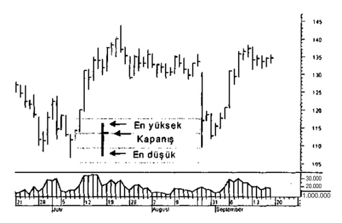
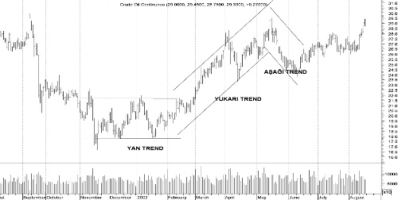
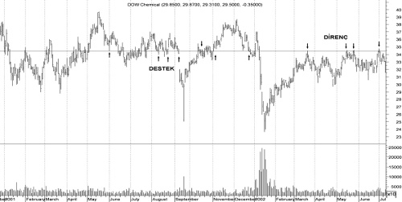
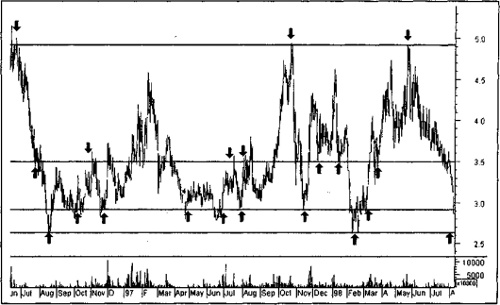
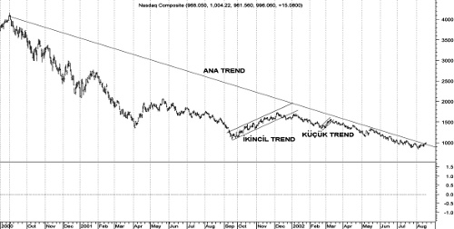
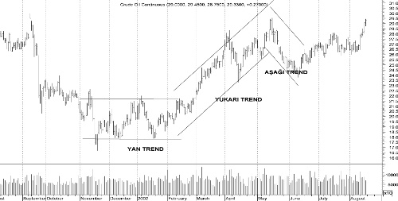
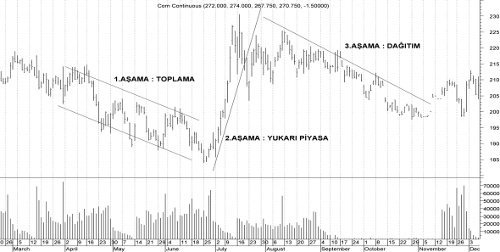
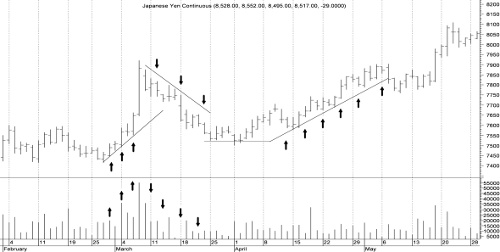
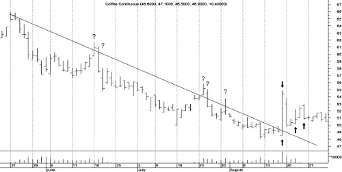

Açıkçası, teknik analiz oldukça detaylı ve uzun bir konudur. Kitabımızın bu bölümünde teknik analize giriş düzeyinde kalmayı amaçlıyoruz. Detayı ile ilgilenen arkadaşlarımız için önerimiz bu konu ile ilgili kitaplardır.
Hafta sonu ekonomi dergilerinde ve aracı kurum raporlarında yapılan kısa analizleri anlayabilecek kadar teknik analiz aktarabilirsek ne mutlu bize. Gerisi detay gereksiniminize kalmıştır.
Charles Dow, 6 Kasım 1851’de, Connecticut’ta çiftçi bir ailenin çocuğu olarak dünyaya geldi. Kendisine meslek olarak gazeteciliği seçti ve ölümüne kadar çeşitli gazetelerde muhabirlik ve editörlük yaptı. Bir maden kasabası olan Leadville, Colorado’da finans muhabirliği yapmaya başlayan Charles Dow, daha sonra, konusunda daha iyi çalışmalar yapabileceği New York’a yerleşti ve Wall Street’te maden borsası ile ilgili bir iş buldu. Kısa zamanda güvenilir ve finans konularında uzman bir muhabir olarak geniş çapta ün yaptı. Bu sayede, Kiernen Haber Ajansı’nda göreve başladı.
Peki Charles Dow, orada kiminle tanıştı biliyor musunuz? İstatistikçi Edward D. Jones ile!
Dow ve Jones adlı bu iki kafadar Kasım 1882’de Kiernen’dan ayrılarak Dow Jones & Company’yi kurdular. Hani o meşhur endekse ismini veren şirketi. Ardından da 8 Temmuz 1889’da gazeteleri Wall Street Journal yayın hayatına başladı. Dow ortaokul mezunuydu ve gazetenin editörlüğünü yapıyor, kendi gazetesinde finansal piyasalarla ilgili görüş ve tahminlerini yayımlıyordu.
DOW TEORİSİ
Charles Dow’un finansal kuramı ile ilgili bir kitabı hiç olmadı. Bunun yerine, gazetesinde 1900-1902 yılları arasında yazdığı yazıları derleyen bir kitap (The ABC of Stock Speculation) 1903’te ortaya çıktı ve Dow Teorisi de böylece doğmuş oldu.
Dow Teorisi, geçmişteki fiyat hareketleri ve işlem hacmine bakılarak gelecekteki fiyat hareketlerinin tahmin edilebileceği varsayımı üzerine kuruludur. Buna göre, fiyatların geçmişteki hareketlere benzer hareketler yapacağı, dolayısıyla geçmiş verilere bakılarak gelecekteki fiyat seviye ve hareketlerinin tahmin edilebileceği varsayılır.
Dow Teorisi’ne dayanan ve gelecekteki fiyat hareketlerini tahmin etme çabası üzerine kurulu olan analize teknik analiz denir. Buna göre teknik analiz, olması gereken teorik fiyatı değil, olacak muhtemel değeri saptamaya çalışır.
TEKNİK ANALİZİN TEMEL İLKELERİ
Teknik analizin üzerine kurulduğu bazı temel ilkeler vardır. Bunlar şöyle özetlenebilir:
• Piyasalarda oluşan fiyatlar her faktörü ve her bilgiyi hesaba katmıştır.
• Piyasalarda tüm fiyatlar trendlere göre hareket eder.
• Fiyatlar belli seviyeleri geçmekte güçlük çeker (destek-direnç).
• Piyasanın üç trendi vardır.
• Ana trendin 3 aşaması vardır.
• Piyasaların ortalamaları (endeksler) birbirini teyit etmelidir.
• İşlem hacmi trendi teyit etmelidir.
• Kesin bir tersine dönüş sinyali alıncaya dek trend sürmektedir.
Bu aşamada teknik analizin olmazsa olmazı durumundaki grafiklerle ilgili birkaç temel bilgiyi vermekte yarar görüyoruz. Teknik analiz fiyat grafikleri üzerine yapılır ve bu grafikler değişik türlerde olabilir. En yaygın kullanılan grafik türü çubuk (bar) grafiktir. Çubuk grafikte, genellikle bir gün (duruma göre bir seans, 5 dakikalık fiyatlar ya da her bir işlem), bir çubukla gösterilmektedir. Çubuğun alt noktası, fiyatın o gün içinde (ya da seans, 5 dk., vs.) gördüğü en düşük seviyeyi, çubuğun üst noktası da gördüğü en yüksek noktayı gösterir. Öte yandan, çubuk üzerindeki sağ tarafa doğru küçük çıkıntı da fiyatların o gün ya da seanstaki kapanışını gösterecektir.

Grafiklerle ilgili temel bilgileri verdikten hemen sonra, bölümün kalanında teknik analizin ilkelerini gözden geçireceğiz.
Fiyatlar Her Faktörü Hesaba Katar
Piyasa oyuncuları haberlere karşı çok hassastır. Menkul kıymetlerin özelinde ya da ekonomik, politik konjonktür genelinde her türlü veriyi dikkate alırlar. Yatırımcılar bu verileri elde etmekle kalmaz, diğer yatırımcılara da ulaştırırlar.
Yatırım kararını etkileyebilecek her veri dikkate alındıktan sonra, söz konusu kıymetler alınır ve satılır. Fiyatları oluşur. Yani yatırımcılar her türlü bilgiyi dikkate alarak fiyatları oluşturmuşlardır.
Kıymet fiyatları tüm bilgileri içeriyorsa, kıymetlerin oluşturduğu endeksler de tüm bilgileri içeriyor demektir. Bu durumda, fiyatları birkaç kişinin değil, bütün yatırımcıların tüm bilgileri dikkate alarak belirlediği varsayılır.
Fiyatlar Trend Dâhilinde Hareket Eder
Menkul kıymet (örneğin hisse senedi) fiyatlarının belli bir yönelim (trend) çevresinde hareket ettiği varsayılır. Buna göre fiyatlar ya artıyor, ya düşüyor ya da yatay seyir izliyordur. Zira, eğer hisseler bir trend izlemiyorlarsa, zaten gelecekte de nasıl hareket edeceklerini tahmin etmek olanaksızdır.
Bu durumda üç çeşit trend olabilir: yukarı trend, aşağı trend ya da yan trend. Trendlerin yönü, onları oluşturan zirvelerin konumlarına göre tanımlanır.

Fiyatların oluşturduğu her yeni zirve bir öncekinden daha yukarıda ise bu bir “yukarı trend”dir. yukarı trend, trendin dip noktalarını birleştiren bir çizgi ile gösterilir. bu çizgi de “yukarı trend çizgisi”dir. Bu çizgi kırılmadığı sürece yükselişin sürdüğü varsayılır. Kıymetler satılmamalı, elde tutulmalıdır.
Eğer oluşan her yeni zirve bir öncekinden aşağıda ise, “aşağı trend” mevcuttur. Aşağı trend, zirve noktaları birleştiren bir çizgi ile gösterilir ve bu çizgiye de “aşağı trend çizgisi” denir. Aşağı trend çizgisi kırılmadığı sürece düşüş sürüyor demektir; bu kıymet alınmamalıdır.
Oluşan yeni zirveler öncekilerle aynı seviyede ise “yan trend”in mevcudiyetinden bahsedilebilir. Bu durumda zirveler bileştirilerek trend çizgisi oluşturulur. Trend çizgisi kırılmadıkça, hareketin sürdüğü varsayılır.
Destek-Direnç
Hareket ederlerken fiyatların bazı seviyelerde zorlandıkları gözlenir. Yukarı giden fiyatlar bazı seviyelere geldiklerinde bir duvara çarpmışçasına duraklar ve geri dönerler. Bazen bu seviyeyi birkaç kez denemelerine rağmen geçemezler. Orada bir “direnç” ile karşılaşmış gibidirler. İşte yukarı fiyat hareketlerinde geçilmekte zorlanılan böylesi seviyelere “teknik direnç” denmektedir.
Benzer biçimde, bazı aşağı hareketlerde de sanki düşüşün önüne bir set çekilir ve düşüş durur. Düşüş bir “direnç” ile karşılaşmıştır. Aşağı yönlü fiyat hareketlerinde karşılaşılan ve geçilmekte zorlanılan, hatta düşüşün sonlandığı fiyat seviyesine de “teknik destek” denir.

Hareketi engelleyen birtakım noktalar destek ve direnç olarak tanımlanıyorlarsa, trend çizgileri de aslında birer destek ve direnç olmalıdır. Sonuçta, aşağı trend çizgisi, fiyatların “kafasını kaldırması”nın önünde bir engel gibi durduğuna göre, aynı zamanda bir dirençtir. Aynı mantıkla, yukarı trend çizgisi de bir destek vazifesi görmektedir.
Destek ya da direnç noktalarına gelindiğinde, o seviyede alım satım olmuş, ama o seviye geçilememiş olur. Eğer bu durum birkaç kez olur ve yine de o seviye geçilemez ise, o fiyat seviyesinden “maliyetlenmiş” ve zararda olan bir yatırımcı kitlesi oluşacaktır.

Bu durum da o kırılan seviyenin, eğer direnç ise destek ve destek ise de direnç hâline dönüşmesine yol açacaktır. Yani destek ve dirençler kırıldıklarında görev değiştirebilirler.
Piyasada Üç Temel Trend Vardır
Herhangi bir anda bakıldığında, piyasada üç temel trend olduğu görünür. Birbirleriyle iç içe durumda olan bu trendler şöyle sınıflandırılabilir:
• Ana Trend: 1 yıl ya da daha uzun süreli yönelimi ifade eder. Temel olarak yukarı ya da aşağı trend olarak tanımlanır. Fiyatların genel yönünü gösterir.
• İkincil Trend: 1 ya da birkaç aylık yönelimlerdir. Düşen bir piyasa içindeki önemli yükselişler ya da yükselen bir piyasa içindeki önemli düşüşler olarak tanımlanabilirler. Ana trendin düzeltmeleridir.
• Küçük Trend: 1 gün ile 1 ay arasında değişen vadedeki eğilimleri ifade ederler. Birkaç küçük trend bir araya gelerek ikincil bir trendi oluşturmaktadır.

Ana Trendin Üç Aşaması Vardır
Dow, piyasada kendini tekrar eden döngüler olduğunu varsayar. Buna göre, her bir döngü 3 aşamadan oluşur ve bittiğinde yeniden başlar. Döngüleri oluşturan aşamalar şunlardır:
• Toplama
• Yukarı piyasa (Boğa piyasası)
• Dağıtım (Aşağı piyasa-Ayı piyasası)

Genel piyasa koşulları nötr, hatta negatif iken ve piyasada fiyatlar yatay seyirdeyken, sınırlı sayıda bilinçli yatırımcı hisse senedi satın almaya başlar. Yavaş yavaş ve piyasaya hissettirmeden yapılan bu alımlar, fiyatları artırmadan bir hisse toplama dönemi yaratır. Piyasaya “akıllı para” girmektedir. Bu toplama aşamasıdır.
Zamanla bilinçli yatırımcıların öngörüleri doğrultusunda piyasaya iyi haberler gelmeye başlar ve olumlu haberlerle küçük yatırımcılar da alıma başlar. Hisseleri “toplayan” yatırımcıların geniş kitleler tarafından “fark edilmesi” de bu genel alımın nedenlerinden birisi olacaktır. Piyasada alım yönünde bir trend oluşmaya başlamasıyla fiyatlar da yükselişe geçecektir. Bu yukarı piyasa (boğa piyasası) aşamasıdır.
Üçüncü aşamada ise artık piyasada çok olumlu bir hava vardır. En olumsuz yatırımcılar bile artık iyi haberlerin peşinden koşmaya ve alım yapmaya hazırdır. Artık “akıllı olmayan para” piyasaya girmeye başlar. Bu yoğun alım furyasından faydalanmayı düşünen “akıllı para” satışa geçer. Zaten toplama aşamasından beri almakta olduğu ve maliyeti oldukça düşük kalmış olan menkul kıymetleri satma zamanıdır. Bu durumun zaman içinde genele yayılmasıyla büyük satış baskısı oluşur ve kıymetleri, fiyatları başlangıçtaki değerlerine dek düşebilir. Bu da son aşama olan dağıtım (aşağı piyasa) evresidir.

Fiyatlar yeterince düştükten ve çöküş unutulduktan sonra, aynı döngü tekrar başlayacaktır ve bu böyle sürüp gidecektir.
Ortalamalar (Endeksler) Birbirini Teyit Etmelidir
Piyasayı analiz etmekte kullanılan göstergeler birbirlerini teyit etmelidirler. Bunlar –kitabın konusu olmayan– ileri teknik analiz göstergeleri olabileceği gibi, basit endeksler de olabilir.
Buna göre, birden fazla endeks ya da ortalama benzer bir hareketle trend değişikliğine işaret ediyor ise, bu mesaj kesinlikle dikkate alınmalıdır.
İşlem Hacmi, Trendi Teyit Etmelidir
Eğer bir fiyat çok sayıda katılımcının ticareti sonucunda oluşuyor ise o fiyat “doğru”dur. Fiyatların on binlerce hatta yüz binlerce katılımcının alım satımı sonucunda oluşması, fiyatların yönlendirilemediği sonucunu verecektir. Eğer fiyatlar “yönlendirilmiyor ise, sürünün hareketleri takip edilerek bir sonraki hareketi de tahmin edilebilecek demektir. Bir sonraki hareket bir ya da birkaç kişinin kararına bağlı ise (işlem hacmi düşük ise) zaten o küçük grubun aklından geçenler tahmin edilemeyeceğine göre, fiyatlar da öngörülemez.
O hâlde, bir trend tespit edildiğinde, bunu büyük kalabalıkların oluşturup oluşturmadığını anlamanın yolu, işlem hacmini incelemekten geçecektir.
Eğer yukarı yönlü bir trend varken işlem hacmi de artıyor ise trendin süreceğini tahmin edebiliriz. Benzer biçimde, aşağı yönlü bir trende yüksek hacim eşlik ediyor ise, yine beklentimiz fiyatlardaki düşüşün süreceği yönünde olacaktır.
Öte yandan, fiyatlar yükselir ya da düşerken, işlem hacmi de düşüyor ise, görülen trendin çok güçlü bir trend olmadığını ve bir süre sonra yön değiştireceğini öngörebiliriz.

Yukarıdaki şekil incelendiğinde, yukarı çıkış esnasında işlem hacminin de arttığı ve artışı desteklediği söylenebilir. Oysa artışın ardından düşüş başladığında işlem hacminin azalarak bu hareketi teyit etmediği gözlenmektedir. Bu durum, düşüşün nihayetleneceği şeklinde yorumlanabilir. Nitekim düşüş, bir taban bulmuş ve yeniden güçlü bir yükseliş başlamıştır.
O hâlde işlem hacmi artıyor ise trend –hangi yönde olursa olsun– doğrudur ve sürmesi beklenir. Azalan işlem hacmi ise trendin sona yaklaştığının bir sinyali olarak kabul edilir.
Kesin Bir Dönüş Sinyali Görülünceye Dek Trend Sürmektedir
Yükseliş ya da düşüş trendleri asla mükemmel çizgiler hâlinde gelişmez. Dolayısıyla, trend çizgileri de hep cetvelle çizilmiş gibi belli noktalardan geçmez. Bunun bir sonucu olarak trend çizgileri sık sık kırılıyor gibi görünürler. Harekete geçmek için trendin kırıldığına emin olmak gerekir.
İşte bu noktada, Dow Teorisi bize, trendin kesin olarak kırıldığından emin olmadan harekete geçmemeyi önerir. “Kesin bir kırılma sinyali”, trend çizgisinden sapmanın birkaç gün sürmesi anlamına gelecektir. Bu birkaç gün çok kısa olursa yanlış sinyal olabilir. Çok uzun süre beklenirse, bu kez de harekete geçmek için çok geç kalınacaktır. Birkaç günün 2 ya da 3 gün olduğu düşünülür.

Bu grafikte de soru işareti (?) ile gösterilen noktalarda trend kırılıyor gibi görünse de net bir dönüş sinyali olmadığı için trendin sürüyor olduğuna karar vermek gerekir. Nitekim öyle de olmuştur.
O hâlde, net bir sinyal görülmediği sürece, yönü ne olursa olsun trendin sürmekte olduğu düşünülebilir.
TEKNİK ANALİZ SÜRECİ
Yukarıdaki temel ilkeler “teknik analiz”in temel taşlarıdır. Bunların bir kısmı doğrudan analiz sürecinin kendisi iken, diğerleri dikkat edilmesi gereken detaylar olarak karşımıza çıkmaktadır.
Detayları bir kenara bırakırsak analiz süreci şöyle olmalıdır:
1. Grafik üzerinde trend olup olmadığına bakmak. Varsa ana, ikincil ve küçük trendleri saptamak ve bunların trend çizgilerini çizmek.
2. Trendler dışındaki destek ve dirençleri saptamak ve bunları çizmek.
3. İşlem hacmini inceleyerek trendlerin güvenilir olup olmadıklarına dikkat etmek.
Bu üç adım, aslında “teknik analize giriş” başlığını oluşturmaktadır ve kitabımızda teknik analiz ile ilgili olarak aktarmak istediklerimizin sınırı da tam burasıdır.
O hâlde...
Bu bölümde, kitap içinde küçük bir teknik analiz kitabı hazırlamış gibi olduk. Bu anlamda, önce C. Dow’dan ve onun teorisinden kısaca bahsettik. Ardından da teknik analizi Dow Teorisi’nin temel ilkeleri çerçevesinde incelemeye koyulduk.
Dow Teorisi’nin, dolayısıyla teknik analizin temel ilkeleri şöyle idi:
• Piyasalarda oluşan fiyatlar her faktörü ve her bilgiyi hesaba katmıştır.
• Piyasalarda tüm fiyatlar trendlere göre hareket eder.
• Fiyatlar belli seviyeleri geçmekte güçlük çeker (destek-direnç).
• Piyasanın üç trendi vardır.
• Ana trendin 3 aşaması vardır.
• Piyasaların ortalamaları (endeksler) birbirini teyit etmelidir.
• İşlem hacmi, trendi teyit etmelidir.
• Kesin bir tersine dönüş sinyali alıncaya dek trend sürmektedir.
Tüm bu ilkeleri piyasadan örneklerle inceledikten sonra, nasıl analiz yapılacağını da özetledik:
• Önce, grafik üzerinde trend olup olmadığına bakmak gerekiyor. Varsa ana, ikincil ve küçük trendleri saptamak ve bunların trend çizgilerini çizmek lazım.
• Ardından –eğer varsa– trendler dışındaki destek ve dirençleri saptamak ve bunları çizmek gerekli.
• Son olarak da işlem hacmini inceleyerek trendlerin güvenilir olup olmadıklarına dikkat etmek önemli.